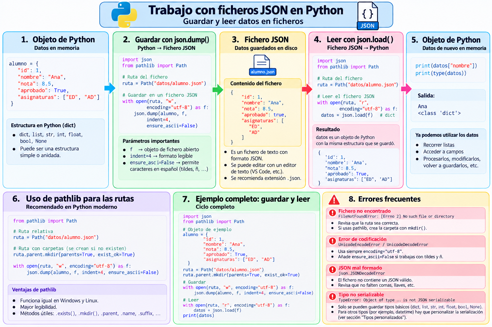

Guardar y leer ficheros JSON¶
1. Persistencia¶
Hasta ahora los datos desaparecen al terminar el programa.
Para conservarlos necesitamos un fichero:
estructura Python
│
│ json.dump()
▼
alumnos.json
│
│ json.load()
▼
estructura Python
Mapa visual: ciclo de trabajo con ficheros JSON¶
El siguiente esquema muestra el proceso completo para guardar una estructura de datos de Python en un fichero JSON y recuperarla posteriormente:

2. Guardar con json.dump()¶
with open(
"alumnos.json",
"w",
encoding="utf-8"
) as f:
json.dump(
alumnos,
f,
indent=4,
ensure_ascii=False
)
3. ¿Por qué usamos with?¶
with utiliza un gestor de contexto y garantiza el cierre del fichero al terminar el bloque, incluso si ocurre una excepción.
with open(...) as f:
...
es preferible a gestionar manualmente close().
4. Modo "w"¶
open("alumnos.json", "w")
abre el fichero para escritura.
Si ya existe, su contenido se sustituye.
Warning
JSON normalmente representa un documento completo. Añadir fragmentos arbitrariamente con modo "a" puede producir un fichero que ya no sea JSON válido.
5. UTF-8¶
Usaremos:
encoding="utf-8"
y al serializar:
ensure_ascii=False
De este modo podemos trabajar correctamente con:
Ángela
Muñoz
Alcalá
6. Pretty printing¶
indent=4
no cambia los datos; únicamente mejora la presentación del fichero.
7. Ejemplo completo de escritura¶
import json
from pathlib import Path
def main():
alumnos = [
{"nombre": "Ana", "edad": 20},
{"nombre": "Luis", "edad": 22},
{"nombre": "Marta", "edad": 19}
]
data_dir = Path("data")
data_dir.mkdir(
parents=True,
exist_ok=True
)
fichero = data_dir / "alumnos.json"
with fichero.open(
"w",
encoding="utf-8"
) as f:
json.dump(
alumnos,
f,
indent=4,
ensure_ascii=False
)
print(
f"Fichero creado: "
f"{fichero.resolve()}"
)
if __name__ == "__main__":
main()
8. Leer con json.load()¶
with fichero.open(
"r",
encoding="utf-8"
) as f:
alumnos = json.load(f)
Si el JSON raíz es un array, normalmente obtendremos una lista.
9. Recorrer los datos¶
for alumno in alumnos:
nombre = alumno.get(
"nombre",
"(sin nombre)"
)
edad = alumno.get(
"edad",
"(sin edad)"
)
print(
f"- {nombre} ({edad} años)"
)
10. Comprobar que existe¶
Antes de leer:
if not fichero.exists():
print(
"El fichero no existe. "
"Ejecuta primero el programa "
"que lo genera."
)
return
11. Errores que pueden aparecer¶
FileNotFoundError¶
El fichero no existe.
PermissionError¶
No tenemos permiso para acceder.
json.JSONDecodeError¶
El fichero existe, pero su contenido no es JSON válido.
12. Lectura robusta¶
try:
with fichero.open(
"r",
encoding="utf-8"
) as f:
alumnos = json.load(f)
except FileNotFoundError:
print("No existe el fichero.")
except json.JSONDecodeError as e:
print("El JSON no es válido.")
print(e)
except OSError as e:
print("Error de acceso al fichero:")
print(e)
13. dump() frente a dumps()¶
json.dumps(datos)
devuelve texto.
json.dump(datos, fichero)
escribe en el fichero.
14. load() frente a loads()¶
json.loads(cadena)
interpreta texto.
json.load(fichero)
lee e interpreta directamente el contenido del fichero.
15. Ciclo completo¶
alumnos: list[dict]
│
▼
json.dump()
│
▼
data/alumnos.json
│
▼
json.load()
│
▼
alumnos: list[dict]
Ejemplos del proyecto: escritura y lectura¶
Abre src/03_guardar_alumnos.py y después src/04_leer_alumnos.py. Ejecútalos en ese orden:
python src/03_guardar_alumnos.py
python src/04_leer_alumnos.py
El primero guarda una lista en data/alumnos.json mediante json.dump(); el segundo la recupera con json.load(). Ambos utilizan with y UTF-8.
Buenas prácticas que incorpora el proyecto¶
- La ruta se calcula desde
Path(__file__).resolve().parent.parent, no desde el directorio de trabajo actual. - Se crea la carpeta
datasi no existe. - Se capturan los errores de lectura/escritura y de JSON mal formado.
- Tras
json.load(), se comprueba conisinstance()que el resultado es una lista antes de recorrerlo.
JSON válido no implica datos correctos
Un fichero con {} o null puede ser JSON válido, pero no representa la lista de alumnos que necesita el programa. Por eso validamos la estructura.